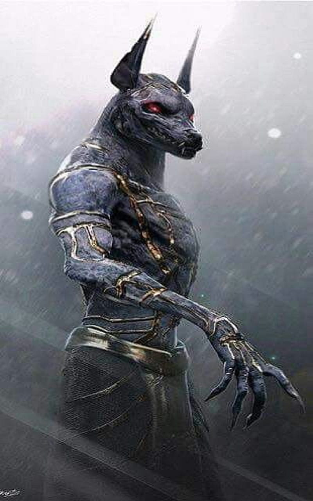

Anubis (Anpu „aukso aušra“, Anup, Anop) (graik. Anoubis, Anoubidos) egiptiečių mitologijoje – pomirtinio pasaulio dievas, balzamavimo viešpats, įsteigęs laidotuvių ritualą
Pagal vienus šaltinius, jo tėvas buvo Setas, motina – Neftidė, pagal kitus – tėvas Ozyris, o motina Izidė. Vadinamas ketvirtuoju Ra sūnumi. Vėliau tampa Ozyrio svitos nariu.
Kadangi Anubis asocijuojamas su tikėjimu apie širdies svėrimą, buvo laikomas pomirtinio pasaulio – Duato – vartų saugotoju, mirties uždangos saugotoju. Buvo manoma, kad jis saugo sielas, kol jos keliauja iki teismo vietos, todėl laikomas pražuvusių sielų globėju (tarp jų ir našlaičių). Jis taip pat ir laidotuvių dievas, identitetas susiliejo su Vepvavetu, panašiu šakalo galva dievu, kuris buvo siejamas su laidojimo ritualu. Vepvavetas buvo garbinamas Aukštutiniame Egipte, o Anubis – Žemutiniame Egipte.
Mano gimimo data 1990
Zodiako zenklas: Jautis